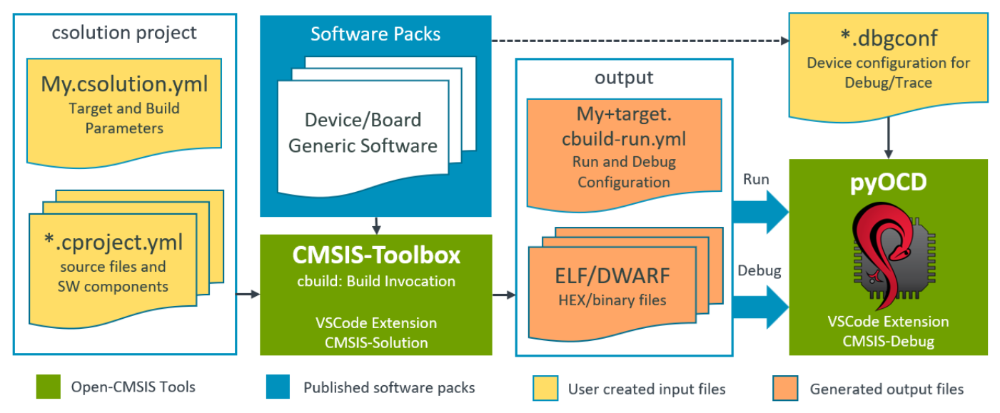

Experimental Features
Experimental features are implemented to iterate on new functionality. Experimental features have limited test coverage and the functionality may change in future versions of the CMSIS-Toolbox without further notice.
The CMSIS-Toolbox version 2.7 implements the experimental features for: - Resource Management - Run and Debug Management
Hardening and finalizing of these features is planned for CMSIS-Toolbox version 2.8.
Resource Management
In a multi-processor or multi-project application, the target type describes the target hardware. A solution is a collection of related projects, and the context set defines the projects that are deployed to the target hardware. A project uses a subset of resources (called regions at linker level).
The linker script management is extended for multi-processor or multi-project applications with the following features:
-
When
resources:node is specified in one of the*.cproject.ymlor*.clayer.ymlfiles of a csolution project:- The file
.\cmsis\<solution-name>+<target-name>.regions.his generated. This file contains the global region settings of a solution for one target type. - The file
.\cmsis\<solution-name>+<target-name>.regions.hreplaces theregions_<device_or_board>.hthat is located in the directory./RTE/Device/<device>. Theregions_<device_or_board>.his no longer generated.
- The file
-
A
define: <project-name>_cprojectis always added to the linker script pre-processor (also when noresources:node is used).
The following picture explains the extended linker script management for multi-project applications.

resources:
The resources: node specifies the resources required by a project. It is used at the level of project:, setup:, or layer:. The resources: node is additive; when multiple resources: nodes specify the same region, the size is added.
Note
In a next iteration, the linker script may be generated by the CMSIS-Toolbox and features from uVision to allocate source modules to specific regions may get added. Therefore the resources: node is forward-looking in the way heap and stack are specified.
resources:
regions:
- region: __ROM0 # region name pre-defined in script template: __ROM0..3
size: 0x10000 # specifies region size
# name: ITCM_Flash - maps to physical memory name(s), if missing use PDSC default memory
# address: - absolution address of region; not in scope for 2.7
# startup: - locate startup/vectors to this region; not in scope for 2.7
# align: - alignment restrictions of the regions; not in scope for 2.7
- region: __RAM0 # region name pre-defined in script template: __RAM0..3
size: 0x8000 # specifies region size
heap: 0x2000 # heap size (only permitted region __RAM0)
stack: 0x4000 # stack size (only permitted in region __RAM0)
# name: - maps to physical memory name(s), if missing use PDSC default memory
# - SRAM1
# - SRAM2
# address: - absolution address of region; not in scope for 2.7
# align: - alignment restrictions of the regions; not in scope for 2.7
# sections: - potentially locate sections (requires linker script generation); not in scope for 2.7
# - .text.function
Example <solution-name>+<target-name>.regions.h file
#ifndef USBD_STM32F746G_DISCO_REGIONS_H
#define USBD_STM32F746G_DISCO_REGIONS_H
// *** DO NOT MODIFY THIS FILE! ***
//
// Generated by csolution 2.7.0 based on packs and csolution project resources
// Device Family Pack (DFP): Keil::STM32F7xx_DFP@3.0.0
// Board Support Pack (BSP): Keil::STM32F746G-DISCO_BSP@1.0.0
// Available Physical Memory Resources
// rx ROM: Name: ITCM_Flash (from DFP) BASE: 0x00200000 SIZE: 0x00100000
// rx ROM: Name: Flash (from DFP) BASE: 0x08000000 SIZE: 0x00100000 (default)
// rwx RAM: Name: DTCM (from DFP) BASE: 0x20000000 SIZE: 0x00010000
// rwx RAM: Name: SRAM1 (from DFP) BASE: 0x20010000 SIZE: 0x00020000 (default)
// rwx RAM: Name: SRAM2 (from DFP) BASE: 0x20030000 SIZE: 0x00020000 (default)
// rwx RAM: Name: BKP_SRAM (from DFP) BASE: 0x40024000 SIZE: 0x00001000
// rwx RAM: Name: ITCM (from DFP) BASE: 0x00000000 SIZE: 0x00004000
//--------------------------------------
#ifdef A_cproject
// Resources allocated in A.cproject.yml
#define __ROM0_BASE 0x08000000 /* Memory Name: Flash */
#define __ROM0_SIZE 0x00010000
#define __RAM0_BASE 0x20010000 /* Memory Name: SRAM1 */
#define __RAM0_SIZE 0x00008000
#define __STACK_SIZE 0x00004000
#define __HEAP_SIZE 0x00002000
#endif /* A_cproject */
//--------------------------------------
#ifdef B_cproject
// Resources allocated in B.cproject.yml
#define __ROM0_BASE 0x08010000 /* Memory Name: Flash */
#define __ROM0_SIZE 0x00030000
#define __RAM0_BASE 0x20018000 /* Memory Name: SRAM1+SRAM2 */
#define __RAM0_SIZE 0x00020000
#define __STACK_SIZE 0x00000200
#define __HEAP_SIZE 0x00000000
#endif /* B_cproject */
#endif /* USBD_STM32F746G_DISCO_REGIONS_H */
Question
- Should the
<solution-name>+<target-name>.regions.hfile contain also#definesymbols for the overall available memory, i.e. for a boot loader?
Adding Memory
Hardware targets may have additional off-chip memory. A memory: node that can be added as additional information to a target type as shown below:
solution:
:
target-types:
- type: MyHardware
device: STMicroelectronics::STM32F746NGHx
memory: # Additional memory available in MyHardware
- name: Ext-Flash # Identifier
access: rx # access permission
start: 0x40000000
size: 0x200000
algorithm: Flash/Ext-Flash.flm # Programming algorithm
Run and Debug Management
The CMSIS-Pack PDSC files contain information about device/board parameters and software components:
- Flash algorithms of device memory (in DFP) and board memory (in BSP).
- On-board debug adapter (a default programming/debug channel) including features.
- Available memory of device and board.
- Device parameters such as processor core(s) and clock speed.
- Debug Access Sequences and System Description Files that support more complex Cortex-A/R/M configurations.
- CMSIS-SVD System View Description (SVD) files for viewing device peripherals.
- CMSIS-View Software Component Viewer Description (SCVD) files for analysis of software components (RTOS, Middleware).
The CMSIS-Toolbox build system manages device/board/software components, controls the build output (typically ELF/DWARF files), and has provisions for HEX, BIN and post-processing. It allows to manage different target-types and the context set manages the images that belong to a target.
In addition, the user may need the following information, which should be added to the YML-Input files for the CMSIS-Toolbox.
- Flash algorithms for external memory in custom hardware (see Adding Memory).
- Additional images can be specified using the
load:node in the*.csolution.ymlfile - Debugger configuration provided by packs can be adjusted using the
debugger:node in the*.csolution.ymlfile - ToDo: Access information for protected debug ports (i.e. encryption keys).
*.cbuild-run.yml
The file <solution-name>+<target-type>.cbuild-run.yml file is generated in the output folder and provides the relevant information for executing Run and Debug commands. Overall the *.cbuild-run.yml file:
- simplifies the usage of Flash programmers and debuggers.
- provides consistent information for command line and IDE workflows.
- ensures that information is portable, i.e. from a cloud-hosted CI system to a desktop test system.
The *.cbuild-run.yml file provides access to PDSC information and the build output of one target. It also exports the Debug Access Sequences.

The <solution-name>+<target-type>.cbuild-run.yml file represents a single target-type of a solution.
Content of <solution-name>+<target-type>.cbuild-run.yml:
cbuild-run:
generated-by: csolution version 2.7.0
solution: CubeMX.csolution.yml
target-type: MyBoard_ROM
compiler: AC6
device: STMicroelectronics::STM32U585AIIx
device-pack: Keil::STM32U5xx_DFP@3.0.0
board: STMicroelectronics::B-U585I-IOT02A:Rev.C
board-pack: Keil::B-U585I-IOT02A_BSP@2.0.0
programming:
- algorithm: ${CMSIS_PACK_ROOT}/Keil/STM32U5xx_DFP/3.0.0/CMSIS/Flash/STM32U5xx_2M_0800.FLM
start: 0x08000000
size: 0x00200000
ram-start: 0x20000000
ram-size: 0x00008000
default: true
- algorithm: ${CMSIS_PACK_ROOT}/Keil/STM32U5xx_DFP/3.0.0/CMSIS/Flash/STM32U5xx_2M_0C00.FLM
start: 0x0C000000
size: 0x00200000
ram-start: 0x20000000
ram-size: 0x00008000
default: true
- algorithm: ${CMSIS_PACK_ROOT}/Keil/STM32U5xx_DFP/3.0.0/CMSIS/Flash/MX25LM51245G_STM32U575I-EVAL.FLM
start: 0x70000000
size: 0x04000000
ram-start: 0x20000000
ram-size: 0x000A0000
system-descriptions:
- file: ${CMSIS_PACK_ROOT}/Keil/STM32U5xx_DFP/3.0.0/CMSIS/SVD/STM32U585.svd
type: svd
output:
- file: out/CubeMX/MyBoard_ROM/Debug/CubeMX.axf
type: elf
system-resources:
memory:
:
debugger:
- name: CMSIS-DAP
:
- name: JLink
:
debug-vars:
:
debug-sequences:
:
system-resources:
The system-resources: node lists the resources of a target system. It includes memory from the DFP, BSP, and memory: definitions from the csolution.yml file.
system-resources: |
Content | |
|---|---|---|
memory: |
Optional | Identifies the section for memory. |
memory: |
Content | |
|---|---|---|
- name: |
Required | Name of the memory region (when PDSC contains id, it uses the id as name). |
access: |
Optional | Access permission of the memory. |
start: |
Optional | Base address of the memory. |
size: |
Optional | Size of the memory. |
default: |
Optional | Memory is always accessible (used for algorithm when no ram-start is specified). |
startup: |
Optional | Default startup code location (vector table). |
pname: |
Optional | Only accessible by a specific processor. |
uninit: |
Optional | Memory content must not be altered. |
alias: |
Optional | Name of identical memory exposed at different address. |
from-pack: |
Optional | Pack that defines this memory. |
system-resources:
memory:
- name: ITCM_Flash
access: rx
start: 0x00200000
size: 0x00100000
from-pack: Keil::STM32U5xx_DFP@3.0.0
- name: Ext-Flash
access: rx
start: 0x40000000
size: 0x200000
default: true
output:
This node contains information about the images that should be loaded. The images that are generated by the csolution project are typically configured using a context set.
Use the load: node in the *.csolution.yml file to add images.
output: |
Content | |
|---|---|---|
- file: |
Required | Specifies the file name. |
info: |
Optional | Brief description of the file. |
type: |
Optional | Specifies the file type. |
run: |
Optional | Additional command string for download or programming. |
debug: |
Optional | Additional command string for debug. |
Note
info: generate by <context> indicates that an image is generated by a context of the csolution project.
debugger:
Proposal: debugger configuration to YML input
This node contains connection information to one or more debuggers.
The information is supplied from DFP and BSP information and the debugger: node in the *.csolution.yml file.
debugger: |
Content | |
|---|---|---|
- name: |
Required | Identifies the debug configuration. |
info: |
Optional | Brief description of the connection |
port: |
Optional | Selected debug port (jtag or swd). |
clock: |
Optional | Selected debug clock speed. |
dbgconf: |
Optional | Debugger configuration file (pinout, trace). |
Example:
debugger:
name: CMSIS-DAP
info: On-Board debugger of MCB4300
port: jtag
clock: 10000000
dbgconf: RTE/Device/lpc4300/lpc4300.dbgconf
debug-vars:
This node contains the debug vars from the DFP for the target.
Note
pname is not required as variables are queried by debug-sequences:. It is enough when these sequences are pname-specific. Currently only one PDSC contains pname (iMX-D7)
dbgconf file is exposed under debugger:. This allows multiple copies for different debugger connection settings.
Additional node vars: is kept to allow for future extensions.
Review Proposal: handling of *.dbgconf files in RTE
debug-vars: |
Content | |
|---|---|---|
vars: |
Optional | Initial values for debug variables used in debug-sequences:. |
Example:
debug-vars:
vars: |
// Debug Access Variables, can be modified by user via copies of DBGCONF files as created by uVision. Also see sub-family level.
__var SWO_Pin = 0; // Serial Wire Output pin: 0 = PIO0_10, 1 = PIO0_8
__var Dbg_CR = 0x00000000; // DBG_CR
__var BootTime = 10000; // 10 milliseconds
debug-sequences:
This node contains the debug sequences from the DFP for the target. These sequences overwrite default parameters.
debug-sequences: |
Content | |
|---|---|---|
- name: |
Required | Name of the sequence. |
info: |
Optional | Descriptive text to display for example for error diagnostics. |
blocks: |
Optional | A list of command blocks in order of execution. |
pname: |
Optional | Executes sequence only for connection to a specific processor; default is for all processors. |
blocks: |
Content | |
|---|---|---|
- info: |
Optional | Descriptive text to display for example for error diagnostics. |
blocks: |
Optional | A list of command blocks in the order of execution. |
execute: |
Optional | Commands for execution. |
atomic: |
Optional | Atomic execution of commands; cannot be used with blocks:. |
if: |
Optional | only executed when expression is true |
while: |
Optional | executed in loop until while expression is true |
timeout: |
Optional | timeout in milliseconds for while loop |
Note
- With
atomic:set, the execution with no interrupts as fast as possible. With CMSIS-DAP Atomic Commands are used. It has therefore restrictions and cannot be combined withblocks:.
Example: debugPortSetup
debug-sequences:
- name: DebugPortSetup
blocks:
- execute: |
__var isSWJ = ((__protocol & 0x00010000) != 0);
__var hasDormant = __protocol & 0x00020000;
__var protType = __protocol & 0x0000FFFF;
- if: protType == 1
blocks:
- if: isSWJ
blocks:
- if: hasDormant
atomic:
execute: |
// Ensure current debug interface is in reset state
DAP_SWJ_Sequence(51, 0x0007FFFFFFFFFFFF);
// Select Dormant State (from SWD)
DAP_SWJ_Sequence(16, 0xE3BC);
// At least 8 cycles SWDIO/TMS HIGH
DAP_SWJ_Sequence(8, 0xFF);
// Alert Sequence Bits 0.. 63
DAP_SWJ_Sequence(64, 0x86852D956209F392);
// Alert Sequence Bits 64..127
DAP_SWJ_Sequence(64, 0x19BC0EA2E3DDAFE9);
// 4 cycles SWDIO/TMS LOW + 8-Bit JTAG Activation Code (0x0A)
DAP_SWJ_Sequence(12, 0x0A0);
// Ensure JTAG interface is reset
DAP_SWJ_Sequence(6, 0x3F);
- if: !hasDormant
atomic:
execute: |
// Ensure current debug interface is in reset state
DAP_SWJ_Sequence(51, 0x0007FFFFFFFFFFFF);
// Execute SWJ-DP Switch Sequence SWD to JTAG (0xE73C)
// Change if SWJ-DP uses deprecated switch code (0xAEAE)
DAP_SWJ_Sequence(16, 0xE73C);
// Ensure JTAG interface is reset
DAP_SWJ_Sequence(6, 0x3F);
- atomic:
execute: |
// JTAG "Soft" Reset
DAP_JTAG_Sequence(6, 1, 0x3F);
DAP_JTAG_Sequence(1, 0, 0x01);
- if: protType == 2
blocks:
- if: isSWJ
blocks:
- if: hasDormant
atomic:
execute: |
// Ensure current debug interface is in reset state
DAP_SWJ_Sequence(51, 0x0007FFFFFFFFFFFF);
// Select Dormant State (from JTAG)
DAP_SWJ_Sequence(31, 0x33BBBBBA);
// At least 8 cycles SWDIO/TMS HIGH
DAP_SWJ_Sequence(8, 0xFF);
// Alert Sequence Bits 0.. 63
DAP_SWJ_Sequence(64, 0x86852D956209F392);
// Alert Sequence Bits 64..127
DAP_SWJ_Sequence(64, 0x19BC0EA2E3DDAFE9);
// 4 cycles SWDIO/TMS LOW + 8-Bit SWD Activation Code (0x1A)
DAP_SWJ_Sequence(12, 0x1A0);
// Enter SWD Line Reset State
DAP_SWJ_Sequence(51, 0x0007FFFFFFFFFFFF); // > 50 cycles SWDIO/TMS High
DAP_SWJ_Sequence(3, 0x00); // At least 2 idle cycles (SWDIO/TMS Low)
- if: !hasDormant
atomic:
execute: |
// Ensure current debug interface is in reset state
DAP_SWJ_Sequence(51, 0x0007FFFFFFFFFFFF);
// Execute SWJ-DP Switch Sequence JTAG to SWD (0xE79E)
// Change if SWJ-DP uses deprecated switch code (0xEDB6)
DAP_SWJ_Sequence(16, 0xE79E);
// Enter SWD Line Reset State
DAP_SWJ_Sequence(51, 0x0007FFFFFFFFFFFF); // > 50 cycles SWDIO/TMS High
DAP_SWJ_Sequence(3, 0x00); // At least 2 idle cycles (SWDIO/TMS Low)
// Enter SWD Line Reset State
DAP_SWJ_Sequence(51, 0x0007FFFFFFFFFFFF); // > 50 cycles SWDIO/TMS High
DAP_SWJ_Sequence(3, 0x00); // At least 2 idle cycles (SWDIO/TMS Low)
- execute: |
// Read DPIDR to enable SWD interface (SW-DPv1 and SW-DPv2)
ReadDP(0x0);
Usage
The *.cbuild-run.yml file can be directly passed to programmers and debug tools, for example, using a command-line option. It contains all information that needs to be passed.
>programmer --csolution MyHardware.cbuild-run.yml